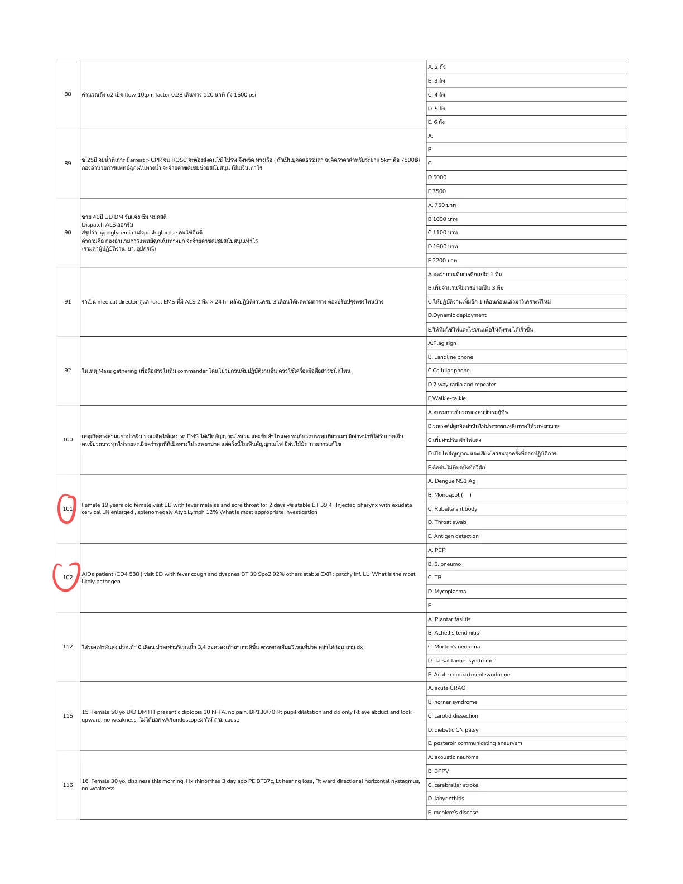
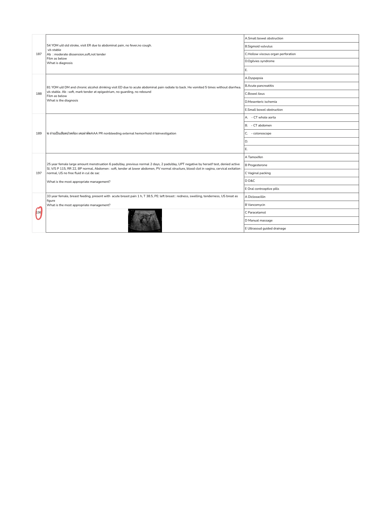
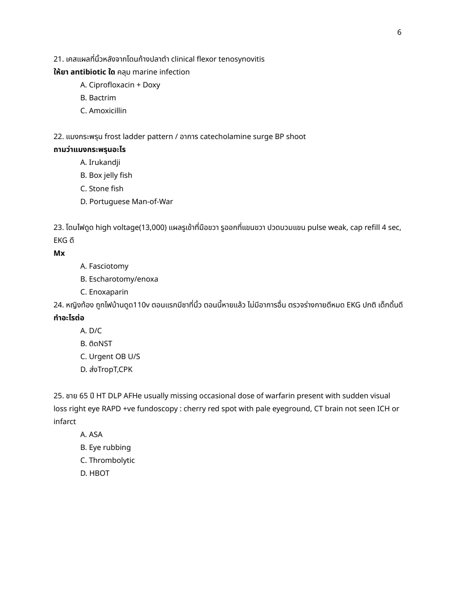
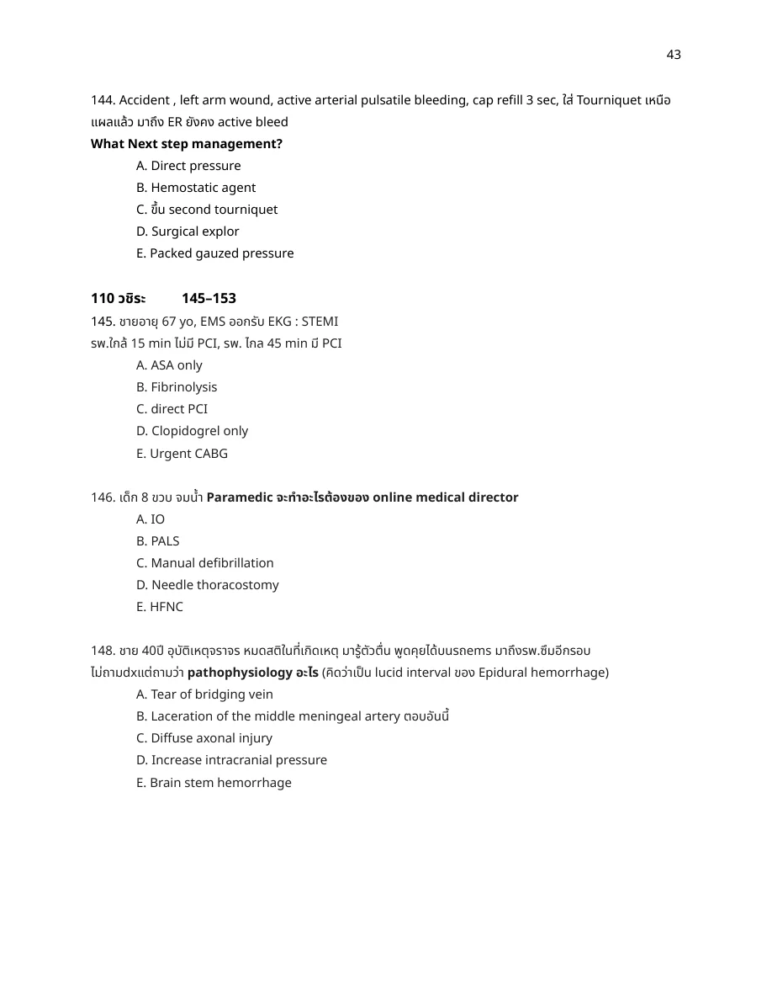
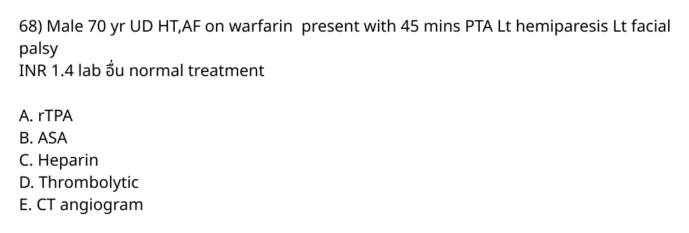
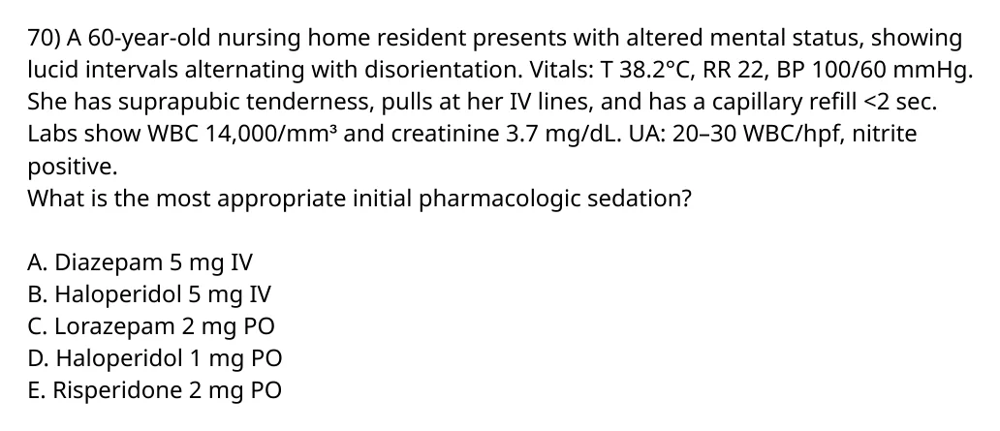
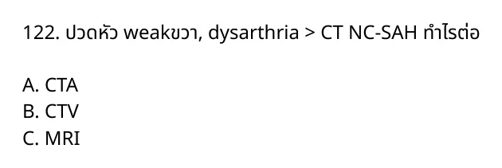
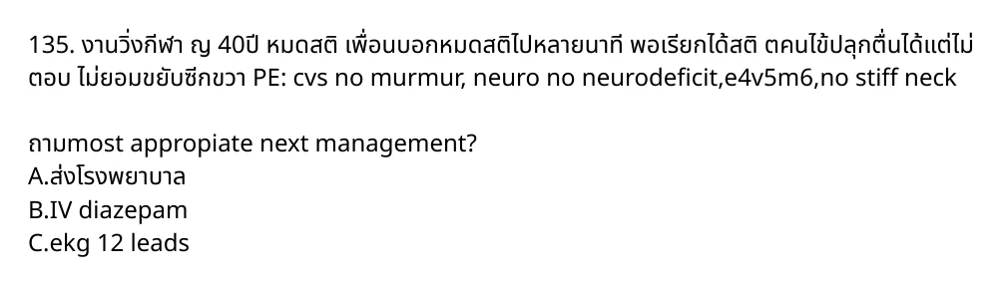

5. Female 60 yr ให้ประวัติล้ม มีอาการแขนอ่อนแรงมากกว่าขา มาถึงรพ vs stable neuro motor upper grade 3 lower grade 4, decrease sensation arm > leg, what is the most likely diagnosis?
crop A. Anterior cord syndrome ยังไม่ถูก
A. Anterior cord syndrome
B. Central cord syndrome ถูกต้อง
Older patient after fall with arm weakness/sensory loss worse than legs is classic central cord syndrome.
C. Brown sequard syndrome ยังไม่ถูก
C. Brown sequard syndrome
D. Posterior cord syndrome ยังไม่ถูก
D. Posterior cord syndrome
E. Complete spinal cord syndrome ยังไม่ถูก
E. Complete spinal cord syndrome
Source: ข้อสอบ R2ชารีฟ/2566new.pdf | Page/slot: 1 | Marker: R2-2566NEW-ROW-005
Reference: Source: ข้อสอบ R2ชารีฟ/2566new.pdf | Page/slot: 1 | Marker: R2-2566NEW-ROW-005
ซ่อนเฉลย เปิดเฉลย Solution ready A11-0001 answer Answer B. Central cord syndrome
Rationale Older patient after fall with arm weakness/sensory loss worse than legs is classic central cord syndrome.
References - Source crop: `source_pdf_inventory/question_crops/ข้อสอบ-r2ชารีฟ-2566new/ข้อสอบ-r2ชารีฟ-2566new_page_0001_full.png`.
14. Male 24 year old กินยากันชักและยารักษาเรื่องติดเชื้อที่ปอดหลายตัวอยู่ 2 เดือน วันนี้เกิดชัก Status epilepticus ให้ IV diazepam ไปหลาย dose แล้วยังไม่หยุดชัก. What is the best medication for abort seizure activity?
crop C. Valproic acid ยังไม่ถูก
C. Valproic acid
D. Pyridoxine ถูกต้อง
Refractory seizure/status in a patient on pulmonary infection/TB medications suggests isoniazid toxicity; pyridoxine is the antidote.
E. Levetiracetam ยังไม่ถูก
E. Levetiracetam
Source: ข้อสอบ R2ชารีฟ/2566new.pdf | Page/slot: 3 | Marker: R2-2566NEW-ROW-014
Reference: Source: ข้อสอบ R2ชารีฟ/2566new.pdf | Page/slot: 3 | Marker: R2-2566NEW-ROW-014
ซ่อนเฉลย เปิดเฉลย Solution ready A11-0002 answer Rationale Refractory seizure/status in a patient on pulmonary infection/TB medications suggests isoniazid toxicity; pyridoxine is the antidote.
References - Source crop: `source_pdf_inventory/question_crops/ข้อสอบ-r2ชารีฟ-2566new/ข้อสอบ-r2ชารีฟ-2566new_page_0003_full.png`.
16. Male 60 years old. No U/D. มาด้วย weakness มี diplopia ตอนอ่านหนังสือ, ptosis เป็นมากระหว่างวัน อาการดีขึ้นหลังตื่นนอน V/S stable. Ptosis left palpebrae. Lung: accessory muscle use, retraction. Drowsiness. What is the best management?
crop B. Physostigmine ยังไม่ถูก
B. Physostigmine
C. Dexamethasone ยังไม่ถูก
C. Dexamethasone
D. Succinylcholine ยังไม่ถูก
D. Succinylcholine
E. Immonoglobulin ถูกต้อง
Fluctuating ptosis/diplopia with respiratory muscle involvement and drowsiness is myasthenic crisis. IVIG is appropriate disease-directed therapy after airway/ventilatory support.
Source: ข้อสอบ R2ชารีฟ/2566new.pdf | Page/slot: 4 | Marker: R2-2566NEW-ROW-016
Reference: Source: ข้อสอบ R2ชารีฟ/2566new.pdf | Page/slot: 4 | Marker: R2-2566NEW-ROW-016
ซ่อนเฉลย เปิดเฉลย Solution ready A11-0003 answer Rationale Fluctuating ptosis/diplopia with respiratory muscle involvement and drowsiness is myasthenic crisis. IVIG is appropriate disease-directed therapy after airway/ventilatory support.
References - Source crop: `source_pdf_inventory/question_crops/ข้อสอบ-r2ชารีฟ-2566new/ข้อสอบ-r2ชารีฟ-2566new_page_0004_full.png`.
17. 68 year old female, vegan presented with both legs weakness and paresthesia. Neuro FTN/rapid alternating movement - normal. Abnormalities: wide base gait, Romberg test positive. หลับตาเเล้วเซมากขึ้น. Where is likely the lesion?
crop B. Posterior column of spinal cord ถูกต้อง
Positive Romberg with preserved cerebellar tests points to proprioceptive loss from posterior column disease, consistent with B12 deficiency risk in a vegan patient.
Source: ข้อสอบ R2ชารีฟ/2566new.pdf | Page/slot: 4 | Marker: R2-2566NEW-ROW-017
Reference: Source: ข้อสอบ R2ชารีฟ/2566new.pdf | Page/slot: 4 | Marker: R2-2566NEW-ROW-017
ซ่อนเฉลย เปิดเฉลย Solution ready A11-0004 answer Answer B. Posterior column of spinal cord
Rationale Positive Romberg with preserved cerebellar tests points to proprioceptive loss from posterior column disease, consistent with B12 deficiency risk in a vegan patient.
References - Source crop: `source_pdf_inventory/question_crops/ข้อสอบ-r2ชารีฟ-2566new/ข้อสอบ-r2ชารีฟ-2566new_page_0004_full.png`.
18. 50 year old presented with AOC, seizure. At ER stop seizure. EKG: tall r avr, wide qrs complex (ให้รูป EKG มา). What is the best next step in management?
crop B. phenobarbital ยังไม่ถูก
B. phenobarbital
C. NaHCO3 ถูกต้อง
Seizure plus wide QRS and tall R in aVR indicates sodium-channel blocker/TCA toxicity. Sodium bicarbonate is the treatment.
Source: ข้อสอบ R2ชารีฟ/2566new.pdf | Page/slot: 4 | Marker: R2-2566NEW-ROW-018
Reference: Source: ข้อสอบ R2ชารีฟ/2566new.pdf | Page/slot: 4 | Marker: R2-2566NEW-ROW-018
ซ่อนเฉลย เปิดเฉลย Solution ready A11-0005 answer Rationale Seizure plus wide QRS and tall R in aVR indicates sodium-channel blocker/TCA toxicity. Sodium bicarbonate is the treatment.
References - Source crop: `source_pdf_inventory/question_crops/ข้อสอบ-r2ชารีฟ-2566new/ข้อสอบ-r2ชารีฟ-2566new_page_0004_full.png`.
19. ชักต่อเนื่องได้ยากันชักไปหลายตัวแล้ว มาถึง er หยุดชัก แต่มีตากระตุก PE: faint facial spasm, eye saccade, ถาม dx
crop A. Generalized partial seizure ยังไม่ถูก
A. Generalized partial seizure
C. Non convulsive seizures ถูกต้อง
Subtle eye movements/facial twitching after apparent control of convulsive status suggests ongoing nonconvulsive seizure activity.
Source: ข้อสอบ R2ชารีฟ/2566new.pdf | Page/slot: 5 | Marker: R2-2566NEW-ROW-019
Reference: Source: ข้อสอบ R2ชารีฟ/2566new.pdf | Page/slot: 5 | Marker: R2-2566NEW-ROW-019
ซ่อนเฉลย เปิดเฉลย Solution ready A11-0006 answer Answer C. Non convulsive seizures
Rationale Subtle eye movements/facial twitching after apparent control of convulsive status suggests ongoing nonconvulsive seizure activity.
References - Source crop: `source_pdf_inventory/question_crops/ข้อสอบ-r2ชารีฟ-2566new/ข้อสอบ-r2ชารีฟ-2566new_page_0005_full.png`.
23. 75 YOM เข้าสวนขุดดิน syncope จากนั้นเมียปลุกตื่นดี PE BP V/S 170/80 HR 71, PE ปกติหมด มีแค่ Heart: Mid SEM gr II ถาม dx
crop A. AS ถูกต้อง
Syncope in an elderly patient with systolic ejection murmur is most consistent with aortic stenosis.
Source: ข้อสอบ R2ชารีฟ/2566new.pdf | Page/slot: 5 | Marker: R2-2566NEW-ROW-023
Reference: Source: ข้อสอบ R2ชารีฟ/2566new.pdf | Page/slot: 5 | Marker: R2-2566NEW-ROW-023
ซ่อนเฉลย เปิดเฉลย Solution ready A11-0007 answer Rationale Syncope in an elderly patient with systolic ejection murmur is most consistent with aortic stenosis.
References - Source crop: `source_pdf_inventory/question_crops/ข้อสอบ-r2ชารีฟ-2566new/ข้อสอบ-r2ชารีฟ-2566new_page_0005_full.png`.
24. หญิง 78 ปี u/d HT มาด้วย syncope ไม่มี prodromal symptom. V/S: BP 135/85, HR 46, SpO2 93% RA. Lung: crepitation จากนั้น Develop drowsiness, diaphoresis. EKG: 3rd degree AV block, ถาม management
crop D. 10% Ca gluconate ยังไม่ถูก
D. 10% Ca gluconate
E. transcutaneous pacing ถูกต้อง
Unstable complete heart block with syncope/drowsiness and diaphoresis requires immediate pacing.
Source: ข้อสอบ R2ชารีฟ/2566new.pdf | Page/slot: 5 | Marker: R2-2566NEW-ROW-024
Reference: Source: ข้อสอบ R2ชารีฟ/2566new.pdf | Page/slot: 5 | Marker: R2-2566NEW-ROW-024
ซ่อนเฉลย เปิดเฉลย Solution ready A11-0008 answer Answer E. transcutaneous pacing
Rationale Unstable complete heart block with syncope/drowsiness and diaphoresis requires immediate pacing.
References - Source crop: `source_pdf_inventory/question_crops/ข้อสอบ-r2ชารีฟ-2566new/ข้อสอบ-r2ชารีฟ-2566new_page_0005_full.png`.
32. COPD พ่นยาแล้วไม่ดีขึ้น ไอเสมหะเยอะมาก, ซึม E3V5M6 SpO2 93% ถาม management
crop A. ETT ถูกต้อง
COPD exacerbation with altered mental status and copious secretions is not a good NIV candidate; definitive airway/intubation is the best option.
Source: ข้อสอบ R2ชารีฟ/2566new.pdf | Page/slot: 7 | Marker: R2-2566NEW-ROW-031
Reference: Source: ข้อสอบ R2ชารีฟ/2566new.pdf | Page/slot: 7 | Marker: R2-2566NEW-ROW-031
ซ่อนเฉลย เปิดเฉลย Solution ready A11-0009 answer Rationale COPD exacerbation with altered mental status and copious secretions is not a good NIV candidate; definitive airway/intubation is the best option.
References - Source crop: `source_pdf_inventory/question_crops/ข้อสอบ-r2ชารีฟ-2566new/ข้อสอบ-r2ชารีฟ-2566new_page_0007_full.png`.
44) ชาย40 ปี มาด้วยซึม GCS 7 lab – Na 112 urine osmole30 urine sodium7 serum osmole 265. Which of following is the most likely diagnosis?
crop C. Over diuresis ยังไม่ถูก
C. Over diuresis
D. Cerebral salt wasting ยังไม่ถูก
D. Cerebral salt wasting
E. Primary polydipsia ถูกต้อง
Hypotonic hyponatremia with very dilute urine osmolality and low urine sodium fits excess free-water intake/primary polydipsia.
Source: ข้อสอบ R2ชารีฟ/2566new.pdf | Page/slot: 9 | Marker: R2-2566NEW-ROW-043
Reference: Source: ข้อสอบ R2ชารีฟ/2566new.pdf | Page/slot: 9 | Marker: R2-2566NEW-ROW-043
ซ่อนเฉลย เปิดเฉลย Solution ready A11-0010 answer Answer E. Primary polydipsia
Rationale Hypotonic hyponatremia with very dilute urine osmolality and low urine sodium fits excess free-water intake/primary polydipsia.
References - Source crop: `source_pdf_inventory/question_crops/ข้อสอบ-r2ชารีฟ-2566new/ข้อสอบ-r2ชารีฟ-2566new_page_0009_full.png`.
54. AFI 1 day with headache Skin rash
crop A. Meningococcemia ถูกต้อง
Acute fever/headache with rash is concerning for meningococcemia/meningococcal disease.
Source: ข้อสอบ R2ชารีฟ/2566new.pdf | Page/slot: 10 | Marker: R2-2566NEW-ROW-053
Reference: Source: ข้อสอบ R2ชารีฟ/2566new.pdf | Page/slot: 10 | Marker: R2-2566NEW-ROW-053
ซ่อนเฉลย เปิดเฉลย Solution ready A11-0011 answer Rationale Acute fever/headache with rash is concerning for meningococcemia/meningococcal disease.
References - Source crop: `source_pdf_inventory/question_crops/ข้อสอบ-r2ชารีฟ-2566new/ข้อสอบ-r2ชารีฟ-2566new_page_0010_full.png`.
56. Female 30 year-old Numbness at right 5th finger and lateral 4th finger, no weakness, DTX normal, V/S normal, other neuro normal, tinel neg, phlen neg, Dx?
crop A. Guyon canal syndrome ถูกต้อง
Numbness in the 5th finger and ulnar half of the 4th finger is ulnar nerve distribution; Guyon canal is the listed focal ulnar entrapment.
B. Carpal tunnel syndrome ยังไม่ถูก
B. Carpal tunnel syndrome
Source: ข้อสอบ R2ชารีฟ/2566new.pdf | Page/slot: 11 | Marker: R2-2566NEW-ROW-055
Reference: Source: ข้อสอบ R2ชารีฟ/2566new.pdf | Page/slot: 11 | Marker: R2-2566NEW-ROW-055
ซ่อนเฉลย เปิดเฉลย Solution ready A11-0012 answer Answer A. Guyon canal syndrome
Rationale Numbness in the 5th finger and ulnar half of the 4th finger is ulnar nerve distribution; Guyon canal is the listed focal ulnar entrapment.
References - Source crop: `source_pdf_inventory/question_crops/ข้อสอบ-r2ชารีฟ-2566new/ข้อสอบ-r2ชารีฟ-2566new_page_0011_full.png`.
63. 50ปี ชาย CHF, AF มาด้วย ซึมหอบเหนื่อย ใส่ NG แล้วมีเลือดออก. On ASA, Plavix, Apixaban. ให้ยาอะไร นอกจาก fluid
crop A. protamine sulfate ยังไม่ถูก
A. protamine sulfate
E. Platelet concentration ถูกต้อง
Bleeding while on aspirin plus clopidogrel plus apixaban has no listed Xa reversal agent/PCC option; platelet transfusion is the best available option for antiplatelet effect.
Source: ข้อสอบ R2ชารีฟ/2566new.pdf | Page/slot: 12 | Marker: R2-2566NEW-ROW-062
Reference: Source: ข้อสอบ R2ชารีฟ/2566new.pdf | Page/slot: 12 | Marker: R2-2566NEW-ROW-062
ซ่อนเฉลย เปิดเฉลย Solution ready A11-0013 answer Answer E. Platelet concentration
Rationale Bleeding while on aspirin plus clopidogrel plus apixaban has no listed Xa reversal agent/PCC option; platelet transfusion is the best available option for antiplatelet effect.
References - Source crop: `source_pdf_inventory/question_crops/ข้อสอบ-r2ชารีฟ-2566new/ข้อสอบ-r2ชารีฟ-2566new_page_0012_full.png`.
70. Female 25 Y present proximal weakness at leg then weak arm. PH Vaccine flu 3 weeks ago
crop A. IVIG ถูกต้อง
Ascending proximal weakness after influenza vaccination suggests Guillain-Barre syndrome; IVIG is appropriate treatment.
Source: ข้อสอบ R2ชารีฟ/2566new.pdf | Page/slot: 12 | Marker: R2-2566NEW-ROW-067
Reference: Source: ข้อสอบ R2ชารีฟ/2566new.pdf | Page/slot: 12 | Marker: R2-2566NEW-ROW-067
ซ่อนเฉลย เปิดเฉลย Solution ready A11-0014 answer Rationale Ascending proximal weakness after influenza vaccination suggests Guillain-Barre syndrome; IVIG is appropriate treatment.
References - Source crop: `source_pdf_inventory/question_crops/ข้อสอบ-r2ชารีฟ-2566new/ข้อสอบ-r2ชารีฟ-2566new_page_0012_full.png`.
76. 22 Y 3 D AOC and headache. V/S BT 38 BP 120/70 PR 100 RR 20 sat 99. E3V3M5 pupil 3 mm BRTL sOff neck positive. LP WBC 9 lymp 100%, RBC 4 glucose 87 protein 174. Treatment?
crop A. Acyclovir ถูกต้อง
Altered consciousness, fever/headache, lymphocytic CSF and high protein are concerning for viral encephalitis; IV acyclovir is indicated.
Source: ข้อสอบ R2ชารีฟ/2566new.pdf | Page/slot: 13 | Marker: R2-2566NEW-ROW-073
Reference: Source: ข้อสอบ R2ชารีฟ/2566new.pdf | Page/slot: 13 | Marker: R2-2566NEW-ROW-073
ซ่อนเฉลย เปิดเฉลย Solution ready A11-0015 answer Rationale Altered consciousness, fever/headache, lymphocytic CSF and high protein are concerning for viral encephalitis; IV acyclovir is indicated.
References - Source crop: `source_pdf_inventory/question_crops/ข้อสอบ-r2ชารีฟ-2566new/ข้อสอบ-r2ชารีฟ-2566new_page_0013_full.png`.
89. female 25 yr, no u/d, after use toilet cleaner with bleach, got episode of syncope, HR 120, BP stable, RR 24, spO2 91%, PE: injected conjunctiva, flushing on her face, most appropriate Mx?
crop B. NB adrenaline ยังไม่ถูก
B. NB adrenaline
C. NB 7.5% NaHCO3 ถูกต้อง
Bleach/toilet-cleaner exposure suggests chlorine/chloramine irritant gas. Nebulized sodium bicarbonate is a recognized symptomatic treatment for chlorine inhalation injury in this option set.
Source: ข้อสอบ R2ชารีฟ/2566new.pdf | Page/slot: 15 | Marker: R2-2566NEW-ROW-086
Reference: Source: ข้อสอบ R2ชารีฟ/2566new.pdf | Page/slot: 15 | Marker: R2-2566NEW-ROW-086
ซ่อนเฉลย เปิดเฉลย Solution ready A11-0016 answer Rationale Bleach/toilet-cleaner exposure suggests chlorine/chloramine irritant gas. Nebulized sodium bicarbonate is a recognized symptomatic treatment for chlorine inhalation injury in this option set.
References - Source crop: `source_pdf_inventory/question_crops/ข้อสอบ-r2ชารีฟ-2566new/ข้อสอบ-r2ชารีฟ-2566new_page_0015_full.png`.
96. Thai male 38 years old, mine worker 5 years, presented with severe abdominal pain, nausea, vomiting, generalized weakness. V/S HR 110, BT37 BP120/80 O2sat 98%RA, PE: good consciousness, mild pale conjunctiva, no icteric sclera, heart wnl, lung clear, abd: mild tender at epigastrium, no guarding, ext no edema, neuro grossly intact. ให้รูปเล็บนิ้วมือ ถาม specific treatment
crop A. Uthio (จำชื่อยาไม่ได้) ถูกต้อง
Mine worker with GI symptoms/weakness and Mees lines suggests arsenic poisoning. Unithiol/DMPS is a specific chelator for arsenic.
C. Penilli (จำชื่อยาไม่ได้) ยังไม่ถูก
C. Penilli (จำชื่อยาไม่ได้)
E. Acetylcysteine ยังไม่ถูก
E. Acetylcysteine
Source: ข้อสอบ R2ชารีฟ/2566new.pdf | Page/slot: 16 | Marker: R2-2566NEW-ROW-093
Reference: Source: ข้อสอบ R2ชารีฟ/2566new.pdf | Page/slot: 16 | Marker: R2-2566NEW-ROW-093
ซ่อนเฉลย เปิดเฉลย Solution ready A11-0017 answer Answer A. Uthio (จำชื่อยาไม่ได้)
Rationale Mine worker with GI symptoms/weakness and Mees lines suggests arsenic poisoning. Unithiol/DMPS is a specific chelator for arsenic.
References - Source crop: `source_pdf_inventory/question_crops/ข้อสอบ-r2ชารีฟ-2566new/ข้อสอบ-r2ชารีฟ-2566new_page_0016_full.png`.
132. เด็กชัก 30นาที มี URI น้ำ มีประวัติ recurrent infection URI/GI บ่อยๆ รอบนี้ซึมๆ vs ดี ตรวจ neuro dtr2+ gr4all ให้รูปตามา เป็นไรไม่รู้ ถาม dx
crop A. telangiectasia ถูกต้อง
Recurrent sinopulmonary/GI infections plus ocular telangiectasia points to ataxia-telangiectasia.
B. cavernous hemangioma ยังไม่ถูก
B. cavernous hemangioma
C. Posterior communicating artery aneurysm ยังไม่ถูก
C. Posterior communicating artery aneurysm
D. hydrocephalus, ยังไม่ถูก
D. hydrocephalus,
Source: ข้อสอบ R2ชารีฟ/2566new.pdf | Page/slot: 22 | Marker: R2-2566NEW-ROW-129
Reference: Source: ข้อสอบ R2ชารีฟ/2566new.pdf | Page/slot: 22 | Marker: R2-2566NEW-ROW-129
ซ่อนเฉลย เปิดเฉลย Solution ready A11-0018 answer Rationale Recurrent sinopulmonary/GI infections plus ocular telangiectasia points to ataxia-telangiectasia.
References - Source crop: `source_pdf_inventory/question_crops/ข้อสอบ-r2ชารีฟ-2566new/ข้อสอบ-r2ชารีฟ-2566new_page_0022_full.png`.
134. 10 yr boy เล่น syncope 30 min EKG, QT prolong syndrome ให้ management
crop A. Propranolol ถูกต้อง
Long QT syndrome with syncope is treated first-line with a beta blocker such as propranolol.
B. aminophylline ยังไม่ถูก
B. aminophylline
Source: ข้อสอบ R2ชารีฟ/2566new.pdf | Page/slot: 22 | Marker: R2-2566NEW-ROW-131
Reference: Source: ข้อสอบ R2ชารีฟ/2566new.pdf | Page/slot: 22 | Marker: R2-2566NEW-ROW-131
ซ่อนเฉลย เปิดเฉลย Solution ready A11-0019 answer Rationale Long QT syndrome with syncope is treated first-line with a beta blocker such as propranolol.
References - Source crop: `source_pdf_inventory/question_crops/ข้อสอบ-r2ชารีฟ-2566new/ข้อสอบ-r2ชารีฟ-2566new_page_0022_full.png`.
142. เด็ก 1 week มาด้วยอาเจียน กินไม่ได้ ซึมมากๆ ตัวเย็น หายใจแผ่ว PE: lethargy, mottering, abdomen normal, RS normal, lab hypoNa, hyperK, AKI, hypoPO hypoCa hypoMg, hypoglycemia. Dx?
crop A. NEC
B. Maple syrup
C. Pyloric stenosis
Source: ข้อสอบ R2ชารีฟ/2566new.pdf | Page/slot: 23 | Marker: R2-2566NEW-ROW-139
Reference: Source: ข้อสอบ R2ชารีฟ/2566new.pdf | Page/slot: 23 | Marker: R2-2566NEW-ROW-139
ซ่อนเฉลย เปิดเฉลย Solution ready A11-0020 answer Answer Most likely congenital adrenal hyperplasia/adrenal crisis, but that answer is not visible in the listed options.
Rationale The neonatal vomiting, lethargy, hypothermia, hyponatremia, hyperkalemia, AKI, and hypoglycemia fit salt-wasting adrenal crisis/CAH. The visible choices only show NEC, maple syrup urine disease, and pyloric stenosis, so the original source choice list is incomplete even though the clinical diagnosis is clear.
References - Source crop: `source_pdf_inventory/question_crops/ข้อสอบ-r2ชารีฟ-2566new/ข้อสอบ-r2ชารีฟ-2566new_page_0023_full.png`.
149. เด็ก8ปี ชัก GTCSมา ก่อนจะชัก2ชม กินเห็ดอะไรไม่รู้ หลังหยุดชักมี agitate, visual hallucination ตรวจ neuro ปกติ ถามหา cause
crop E. Ibotenic acid ถูกต้อง
Mushroom ingestion followed by seizure, agitation, and hallucinations is most consistent with ibotenic acid/muscimol-containing mushrooms.
Source: ข้อสอบ R2ชารีฟ/2566new.pdf | Page/slot: 25 | Marker: R2-2566NEW-ROW-146
Reference: Source: ข้อสอบ R2ชารีฟ/2566new.pdf | Page/slot: 25 | Marker: R2-2566NEW-ROW-146
ซ่อนเฉลย เปิดเฉลย Solution ready A11-0021 answer Rationale Mushroom ingestion followed by seizure, agitation, and hallucinations is most consistent with ibotenic acid/muscimol-containing mushrooms.
References - Source crop: `source_pdf_inventory/question_crops/ข้อสอบ-r2ชารีฟ-2566new/ข้อสอบ-r2ชารีฟ-2566new_page_0025_full.png`.
152. Male 25 yrs 1d PTA headache fever stiff neck positive. LP: WBC 100 (Lym 80%) OP 150, glucose 50, protein 50
crop Source: ข้อสอบ R2ชารีฟ/2566new.pdf | Page/slot: 25 | Marker: R2-2566NEW-ROW-149
Reference: Source: ข้อสอบ R2ชารีฟ/2566new.pdf | Page/slot: 25 | Marker: R2-2566NEW-ROW-149
ซ่อนเฉลย เปิดเฉลย Solution ready A11-0022 answer Rationale The source page includes the embedded answer “Fungal meningitis.” Lymphocytic CSF with relatively low glucose/high protein can fit fungal meningitis.
References - Source crop: `source_pdf_inventory/question_crops/ข้อสอบ-r2ชารีฟ-2566new/ข้อสอบ-r2ชารีฟ-2566new_page_0025_full.png`.
159. ผญ 50 ปี weak ทั่วๆ มา 2 วัน ก่อนหน้านี้กินยาแก้ปวดเข่า มาที่อีอา bp 90/60 pr ไม่เร็ว ดูซึมๆ Na ต่ำ K สูง ถาม diag
crop A. thyroid storm ยังไม่ถูก
A. thyroid storm
B. myxedema coma ยังไม่ถูก
B. myxedema coma
C. Addison's disease ถูกต้อง
Weakness, hypotension without tachycardia, hyponatremia, and hyperkalemia fit adrenal insufficiency/Addison disease.
D. Hyperaldosteronism ยังไม่ถูก
D. Hyperaldosteronism
Source: ข้อสอบ R2ชารีฟ/2566new.pdf | Page/slot: 27 | Marker: R2-2566NEW-ROW-156
Reference: Source: ข้อสอบ R2ชารีฟ/2566new.pdf | Page/slot: 27 | Marker: R2-2566NEW-ROW-156
ซ่อนเฉลย เปิดเฉลย Solution ready A11-0023 answer Answer C. Addison's disease
Rationale Weakness, hypotension without tachycardia, hyponatremia, and hyperkalemia fit adrenal insufficiency/Addison disease.
References - Source crop: `source_pdf_inventory/question_crops/ข้อสอบ-r2ชารีฟ-2566new/ข้อสอบ-r2ชารีฟ-2566new_page_0027_full.png`.
179) ALS ออกเหตุ เคส bp drop ซึม เปิด iv แล้ว จากนั้นปรึกษา medical director ผ่านทาง line application เรียกว่า
crop Source: ข้อสอบ R2ชารีฟ/2566new.pdf | Page/slot: 30 | Marker: R2-2566NEW-ROW-176
Reference: Source: ข้อสอบ R2ชารีฟ/2566new.pdf | Page/slot: 30 | Marker: R2-2566NEW-ROW-176
ซ่อนเฉลย เปิดเฉลย Solution ready A11-0024 answer Rationale Consulting a medical director in real time through Line during an ALS case is direct/online medical direction.
References - Source crop: `source_pdf_inventory/question_crops/ข้อสอบ-r2ชารีฟ-2566new/ข้อสอบ-r2ชารีฟ-2566new_page_0030_full.png`.
193) คนไข้ stroke fast track ct brain ล่าช้า ท่านได้พัฒนาระบบให้มีการ activate ct ตั้งแต่บน ems ระบบที่พัฒนาและแก้ไขปัญหา เรียกว่าอะไร
crop C. Lean process ถูกต้อง
Activating CT from EMS to reduce stroke fast-track delay is a workflow waste-reduction/process-improvement intervention, best described as lean process.
D. Risk management ยังไม่ถูก
D. Risk management
E. Routine research ยังไม่ถูก
E. Routine research
Source: ข้อสอบ R2ชารีฟ/2566new.pdf | Page/slot: 33 | Marker: R2-2566NEW-ROW-190
Reference: Source: ข้อสอบ R2ชารีฟ/2566new.pdf | Page/slot: 33 | Marker: R2-2566NEW-ROW-190
ซ่อนเฉลย เปิดเฉลย Solution ready A11-0025 answer Rationale Activating CT from EMS to reduce stroke fast-track delay is a workflow waste-reduction/process-improvement intervention, best described as lean process.
References - Source crop: `source_pdf_inventory/question_crops/ข้อสอบ-r2ชารีฟ-2566new/ข้อสอบ-r2ชารีฟ-2566new_page_0033_full.png`.
M 25 yr, fell 8 m from electical pole
crop A. Head tilt, chin lip ยังไม่ถูก
A. Head tilt, chin lip
B. manual tine & jaw thrust ยังไม่ถูก
B. manual tine & jaw thrust
C. Change hard collar ยังไม่ถูก
C. Change hard collar
D. oropharyngeal airway ยังไม่ถูก
D. oropharyngeal airway
E. intubation ถูกต้อง
GCS 3 with stridor and hypoxemia despite spinal immobilization requires definitive airway management with cervical-spine precautions.
Source: MCQ-202024.pdf.pdf | Page/slot: 3 | Marker: MCQ-202024-ROW-025
Reference: Source: MCQ-202024.pdf.pdf | Page/slot: 3 | Marker: MCQ-202024-ROW-025
ซ่อนเฉลย เปิดเฉลย Solution ready A11-0026 answer Rationale GCS 3 with stridor and hypoxemia despite spinal immobilization requires definitive airway management with cervical-spine precautions.
References - Source crop: `source_pdf_inventory/question_crops/mcq-202024-pdf/mcq-202024-pdf_page_0003_full.png`.
ออกเคส status epilepticus เห็นพาราให้ benzo หลายโดสแล้วยังไม่หยุดชัก ถามว่าเราจะทำอะไรในฐานะ medical oversight
crop A. commend paramedic for aggressive treatment ยังไม่ถูก
A. commend paramedic for aggressive treatment
B. ...ว่า Benzo คือยาหลักที่ใช้รักษา status ยังไม่ถูก
B. ...ว่า Benzo คือยาหลักที่ใช้รักษา status
C. Feedback แล้วให้ explain as document ยังไม่ถูก
C. Feedback แล้วให้ explain as document
D. Provide additional training for paramedic เรื่อง alternative drug for status ยังไม่ถูก
D. Provide additional training for paramedic เรื่อง alternative drug for status
E. ทำ comprehensive review protocol treatment status for EMS system ถูกต้อง
As medical oversight, repeated benzodiazepine-only treatment for refractory status should trigger system-level protocol review and improvement.
Source: MCQ-202024.pdf.pdf | Page/slot: 3 | Marker: MCQ-202024-ROW-030
Reference: Source: MCQ-202024.pdf.pdf | Page/slot: 3 | Marker: MCQ-202024-ROW-030
ซ่อนเฉลย เปิดเฉลย Solution ready A11-0027 answer Answer E. ทำ comprehensive review protocol treatment status for EMS system
Rationale As medical oversight, repeated benzodiazepine-only treatment for refractory status should trigger system-level protocol review and improvement.
References - Source crop: `source_pdf_inventory/question_crops/mcq-202024-pdf/mcq-202024-pdf_page_0003_full.png`.
ทีมแพทย์ปฏิบัติการระดับสูง จะออกรับเคส stroke onset 30 นาที ก่อนออกพบว่าอุปกรณ์ไม่พร้อมใช้ จะร้องขอความช่วยเหลือได้จากใคร
crop A. ทีมปฏิบัติการแพทย์ระดับสูง ยังไม่ถูก
A. ทีมปฏิบัติการแพทย์ระดับสูง
B. ทีมปฏิบัติการแพทย์ระดับที่ปรึกษา ยังไม่ถูก
B. ทีมปฏิบัติการแพทย์ระดับที่ปรึกษา
C. ทีมปฏิบัติการแพทย์ระดับ... ยังไม่ถูก
C. ทีมปฏิบัติการแพทย์ระดับ...
D. ทีมปฏิบัติการแพทย์ระดับเฉพาะทาง ถูกต้อง
The case asks which team to request help from when an advanced EMS team lacks ready equipment before a time-sensitive stroke response. Stroke is one of the named examples of a specialized EMS operation group, so the best matching team category is the specialist-level medical operation team rather than a general advanced or consultant-level team. Option C remains truncated in the source image, but the visible category set and stroke-specific context support option D.
E. ทีมปฏิบัติการแพทย์ระดับสถานการณ์พิเศษ ยังไม่ถูก
E. ทีมปฏิบัติการแพทย์ระดับสถานการณ์พิเศษ
Source: MCQ-202024.pdf.pdf | Page/slot: 3 | Marker: MCQ-202024-ROW-032
Reference: Source: MCQ-202024.pdf.pdf | Page/slot: 3 | Marker: MCQ-202024-ROW-032
ซ่อนเฉลย เปิดเฉลย Solution ready A11-0028 answer Answer D. ทีมปฏิบัติการแพทย์ระดับเฉพาะทาง
Rationale The case asks which team to request help from when an advanced EMS team lacks ready equipment before a time-sensitive stroke response. Stroke is one of the named examples of a specialized EMS operation group, so the best matching team category is the specialist-level medical operation team rather than a general advanced or consultant-level team. Option C remains truncated in the source image, but the visible category set and stroke-specific context support option D.
References - Source crop: `source_pdf_inventory/question_crops/mcq-202024-pdf/mcq-202024-pdf_page_0003_full.png`.
จงประเมิน GCS score เด็กอายุ8เดือน กดที่ตา มีลืมตา+ ส่งเสียงอืออา แขนและข้อมืองอเข้า ขาเหยียดตรงบอดเข้าใน
crop A. 7 ถูกต้อง
GCS is eye opening to pain E2, incomprehensible/cooing sound V2, and abnormal flexion M3, total 7.
Source: MCQ-202024.pdf.pdf | Page/slot: 4 | Marker: MCQ-202024-ROW-044
Reference: Source: MCQ-202024.pdf.pdf | Page/slot: 4 | Marker: MCQ-202024-ROW-044
ซ่อนเฉลย เปิดเฉลย Solution ready A11-0029 answer Rationale GCS is eye opening to pain E2, incomprehensible/cooing sound V2, and abnormal flexion M3, total 7.
References - Source crop: `source_pdf_inventory/question_crops/mcq-202024-pdf/mcq-202024-pdf_page_0004_full.png`.
87. A 2 year-old-boy visit ED due to fever and seizure, he has been having fever for 2 days with rinorrhea and cough. his mother stated that the movement involve all extremities and trunk. This is the first time of seizure. V/S: BT39, BP120/80, P100, RR18, SpO298%RA Active. Motor power grade V all, brudzinski sign negative, other WNL. What is the proper management
crop A. Septic work up ยังไม่ถูก
A. Septic work up
B. Metabolic work up ยังไม่ถูก
B. Metabolic work up
C. Lumbar puncture ยังไม่ถูก
C. Lumbar puncture
E. No further investigation ถูกต้อง
A well-appearing 2-year-old with first simple generalized febrile seizure, URI source, normal exam, and no meningeal signs needs no routine labs/LP/CT.
Source: MCQ-202024.pdf.pdf | Page/slot: 5 | Marker: MCQ-202024-ROW-051
Reference: Source: MCQ-202024.pdf.pdf | Page/slot: 5 | Marker: MCQ-202024-ROW-051
ซ่อนเฉลย เปิดเฉลย Solution ready A11-0030 answer Answer E. No further investigation
Rationale A well-appearing 2-year-old with first simple generalized febrile seizure, URI source, normal exam, and no meningeal signs needs no routine labs/LP/CT.
References - Source crop: `source_pdf_inventory/question_crops/mcq-202024-pdf/mcq-202024-pdf_page_0005_full.png`.
ชาย u/d COPD, Stroke 1 month เหนื่อย lung wheezing ทำ RSI ยาอะไร
crop A. Rocuronium+ketamine ถูกต้อง
Stroke one month ago makes succinylcholine risky from hyperkalemia; ketamine is favorable in bronchospasm/COPD. Rocuronium plus ketamine is best.
B. Rocuronium+Propofol ยังไม่ถูก
B. Rocuronium+Propofol
C. Succa+katamine ยังไม่ถูก
C. Succa+katamine
D. Succa+propofol ยังไม่ถูก
D. Succa+propofol
E. Succa+etomidate ยังไม่ถูก
E. Succa+etomidate
Source: MCQ-202024.pdf.pdf | Page/slot: 6 | Marker: MCQ-202024-ROW-057
Reference: Source: MCQ-202024.pdf.pdf | Page/slot: 6 | Marker: MCQ-202024-ROW-057
ซ่อนเฉลย เปิดเฉลย Solution ready A11-0031 answer Answer A. Rocuronium+ketamine
Rationale Stroke one month ago makes succinylcholine risky from hyperkalemia; ketamine is favorable in bronchospasm/COPD. Rocuronium plus ketamine is best.
References - Source crop: `source_pdf_inventory/question_crops/mcq-202024-pdf/mcq-202024-pdf_page_0006_full.png`.
เด็กอยู่บ้านที่กำลังก่อสร้าง ซึมลง pbs: basophilic stripping most appropriate mx
crop A. British anti-Lewisite(BAL): Dimercaprol ถูกต้อง
Construction exposure with basophilic stippling suggests severe lead poisoning; BAL/dimercaprol is appropriate for severe symptomatic cases.
Source: MCQ-202024.pdf.pdf | Page/slot: 7 | Marker: MCQ-202024-ROW-072
Reference: Source: MCQ-202024.pdf.pdf | Page/slot: 7 | Marker: MCQ-202024-ROW-072
ซ่อนเฉลย เปิดเฉลย Solution ready A11-0032 answer Answer A. British anti-Lewisite(BAL): Dimercaprol
Rationale Construction exposure with basophilic stippling suggests severe lead poisoning; BAL/dimercaprol is appropriate for severe symptomatic cases.
References - Source crop: `source_pdf_inventory/question_crops/mcq-202024-pdf/mcq-202024-pdf_page_0007_full.png`.
ชาย 40ปี UD DM รับแจ้ง ซึม หมดสติ

crop B. 1000 บาท ถูกต้อง
This is an ALS ground EMS mission with treatment and medication use. The supporting rate table for ground EMS lists advanced emergency operation/ALS support as 1000 baht per mission, matching choice B.
Source: MCQ-202024.pdf.pdf | Page/slot: 11 | Marker: MCQ-202024-ROW-113
Reference: Source: MCQ-202024.pdf.pdf | Page/slot: 11 | Marker: MCQ-202024-ROW-113
ซ่อนเฉลย เปิดเฉลย Solution ready A11-0033 answer Rationale This is an ALS ground EMS mission with treatment and medication use. The supporting rate table for ground EMS lists advanced emergency operation/ALS support as 1000 baht per mission, matching choice B.
References - Source crop: `source_pdf_inventory/question_crops/mcq-202024-pdf/mcq-202024-pdf_page_0011_full.png`.
15. Female 50 yo U/D DM HT present c diplopia 10 hPTA, no pain, BP130/70 Rt pupil dilatation and do only Rt eye abduct and look upward, no weakness, ไม่ได้บอกVA/fundoscopeมาให้ ถาม cause
crop B. horner syndrome ยังไม่ถูก
B. horner syndrome
C. carotid dissection ยังไม่ถูก
C. carotid dissection
D. diebetic CN palsy ยังไม่ถูก
D. diebetic CN palsy
E. posteiror communicating aneurysm ถูกต้อง
Pupil-involving third nerve palsy is a posterior communicating artery aneurysm until proven otherwise; diabetic CN palsy usually spares the pupil.
Source: MCQ-202024.pdf.pdf | Page/slot: 11 | Marker: MCQ-202024-ROW-120
Reference: Source: MCQ-202024.pdf.pdf | Page/slot: 11 | Marker: MCQ-202024-ROW-120
ซ่อนเฉลย เปิดเฉลย Solution ready A11-0034 answer Answer E. posteiror communicating aneurysm
Rationale Pupil-involving third nerve palsy is a posterior communicating artery aneurysm until proven otherwise; diabetic CN palsy usually spares the pupil.
References - Source crop: `source_pdf_inventory/question_crops/mcq-202024-pdf/mcq-202024-pdf_page_0011_full.png`.
16. Female 30 yo, dizziness this morning, Hx rhinorrhea 3 day ago PE BT37c, Lt hearing loss, Rt ward directional horizontal nystagmus, no weakness
crop A. acoustic neuroma ยังไม่ถูก
A. acoustic neuroma
C. cerebellar stroke ยังไม่ถูก
C. cerebellar stroke
D. labyrinthitis ถูกต้อง
Acute vertigo with unilateral hearing loss after URI and horizontal nystagmus fits labyrinthitis rather than BPPV or cerebellar stroke.
E. meniere's disease ยังไม่ถูก
E. meniere's disease
Source: MCQ-202024.pdf.pdf | Page/slot: 11 | Marker: MCQ-202024-ROW-121
Reference: Source: MCQ-202024.pdf.pdf | Page/slot: 11 | Marker: MCQ-202024-ROW-121
ซ่อนเฉลย เปิดเฉลย Solution ready A11-0035 answer Rationale Acute vertigo with unilateral hearing loss after URI and horizontal nystagmus fits labyrinthitis rather than BPPV or cerebellar stroke.
References - Source crop: `source_pdf_inventory/question_crops/mcq-202024-pdf/mcq-202024-pdf_page_0011_full.png`.
ชาย 70 ปี dizziness+headache 1 hour then become lethargic, cannot move his arm and legs
crop A. Basilar artery ถูกต้อง
Quadriparesis with preserved consciousness/vertical eye movement pattern is locked-in syndrome from basilar artery occlusion.
B. Vertebral artery ยังไม่ถูก
B. Vertebral artery
Source: MCQ-202024.pdf.pdf | Page/slot: 12 | Marker: MCQ-202024-ROW-122
Reference: Source: MCQ-202024.pdf.pdf | Page/slot: 12 | Marker: MCQ-202024-ROW-122
ซ่อนเฉลย เปิดเฉลย Solution ready A11-0036 answer Rationale Quadriparesis with preserved consciousness/vertical eye movement pattern is locked-in syndrome from basilar artery occlusion.
References - Source crop: `source_pdf_inventory/question_crops/mcq-202024-pdf/mcq-202024-pdf_page_0012_full.png`.
ชาย 59 ปี U/D AF,thyroid. 30 min PTA syncope complaint weak&DOE มาหลายสัปดาห์ V/S stable, moderate pale conjunctiva, no hepatosplenomegaly, neuro-unstable gait Lab Hb 7 Hct 21 WBC 1,600 plt 80,000 ให้รูป PBS ถาม Dx
crop A. acute leukemia ยังไม่ถูก
A. acute leukemia
B. aplastic anemia ยังไม่ถูก
B. aplastic anemia
C. folate deficiency ยังไม่ถูก
C. folate deficiency
D. vit B12 deficiency ถูกต้อง
Pancytopenia plus gait instability suggests megaloblastic anemia with neurologic involvement, most consistent with vitamin B12 deficiency.
E. drug induced hemolytic anemia ยังไม่ถูก
E. drug induced hemolytic anemia
Source: MCQ-202024.pdf.pdf | Page/slot: 16 | Marker: MCQ-202024-ROW-167
Reference: Source: MCQ-202024.pdf.pdf | Page/slot: 16 | Marker: MCQ-202024-ROW-167
ซ่อนเฉลย เปิดเฉลย Solution ready A11-0037 answer Answer D. vit B12 deficiency
Rationale Pancytopenia plus gait instability suggests megaloblastic anemia with neurologic involvement, most consistent with vitamin B12 deficiency.
References - Source crop: `source_pdf_inventory/question_crops/mcq-202024-pdf/mcq-202024-pdf_page_0016_full.png`.
55 yr TB กินยาTB few week มาด้วย generalize tonic clonic seizures หลังชักยังไม่ตื่น ให้ยาอะไร
crop C. pyridoxine ถูกต้อง
Seizure after TB medication suggests isoniazid toxicity; pyridoxine is the antidote.
Source: MCQ-202024.pdf.pdf | Page/slot: 16 | Marker: MCQ-202024-ROW-168
Reference: Source: MCQ-202024.pdf.pdf | Page/slot: 16 | Marker: MCQ-202024-ROW-168
ซ่อนเฉลย เปิดเฉลย Solution ready A11-0038 answer Rationale Seizure after TB medication suggests isoniazid toxicity; pyridoxine is the antidote.
References - Source crop: `source_pdf_inventory/question_crops/mcq-202024-pdf/mcq-202024-pdf_page_0016_full.png`.
ญ 20 yr มาด้วยกิน amitriptyline (25) ปริมาณมาก หลังจากกินมา 2 ชม จากนั้น GCS 4 seizure ได้ diazepam 10 mg IV BP 90/50 EKG ตอนแรก sinus tach then EKG TDP ถาม
crop D. MgSO4 ถูกต้อง
The immediate rhythm described is torsades de pointes, for which magnesium sulfate is the acute treatment.
Source: MCQ-202024.pdf.pdf | Page/slot: 16 | Marker: MCQ-202024-ROW-173
Reference: Source: MCQ-202024.pdf.pdf | Page/slot: 16 | Marker: MCQ-202024-ROW-173
ซ่อนเฉลย เปิดเฉลย Solution ready A11-0039 answer Rationale The immediate rhythm described is torsades de pointes, for which magnesium sulfate is the acute treatment.
References - Source crop: `source_pdf_inventory/question_crops/mcq-202024-pdf/mcq-202024-pdf_page_0016_full.png`.
female 50 y DM, HT, IHD, Hypothyroid มารพ.ด้วย weakness and fatigue, slow speach ปกติจะ active ดี ลูกสาวบอกว่าขาดยามา 2 วัน
crop B. Levothyroxine ยังไม่ถูก
B. Levothyroxine
C. Lugol solution ยังไม่ถูก
C. Lugol solution
D. Hydrocortisone ถูกต้อง
Myxedema coma should receive stress-dose hydrocortisone initially before/with thyroid hormone replacement because adrenal insufficiency can coexist.
E. Triiodothyronine ยังไม่ถูก
E. Triiodothyronine
Source: MCQ-202024.pdf.pdf | Page/slot: 17 | Marker: MCQ-202024-ROW-179
Reference: Source: MCQ-202024.pdf.pdf | Page/slot: 17 | Marker: MCQ-202024-ROW-179
ซ่อนเฉลย เปิดเฉลย Solution ready A11-0040 answer Rationale Myxedema coma should receive stress-dose hydrocortisone initially before/with thyroid hormone replacement because adrenal insufficiency can coexist.
References - Source crop: `source_pdf_inventory/question_crops/mcq-202024-pdf/mcq-202024-pdf_page_0017_full.png`.
กินยา TB ชักมา ให้ยาอะไรแก้
crop A. pyridoxine ถูกต้อง
TB-drug associated seizure points to isoniazid toxicity; pyridoxine is the antidote.
Source: MCQ-202024.pdf.pdf | Page/slot: 18 | Marker: MCQ-202024-ROW-198
Reference: Source: MCQ-202024.pdf.pdf | Page/slot: 18 | Marker: MCQ-202024-ROW-198
ซ่อนเฉลย เปิดเฉลย Solution ready A11-0041 answer Rationale TB-drug associated seizure points to isoniazid toxicity; pyridoxine is the antidote.
References - Source crop: `source_pdf_inventory/question_crops/mcq-202024-pdf/mcq-202024-pdf_page_0018_full.png`.
-50yr hearing loss 2d
crop D. Prednisolone ถูกต้อง
Sudden sensorineural hearing loss should be treated promptly with systemic steroids.
Source: MCQ-202024.pdf.pdf | Page/slot: 19 | Marker: MCQ-202024-ROW-206
Reference: Source: MCQ-202024.pdf.pdf | Page/slot: 19 | Marker: MCQ-202024-ROW-206
ซ่อนเฉลย เปิดเฉลย Solution ready A11-0042 answer Rationale Sudden sensorineural hearing loss should be treated promptly with systemic steroids.
References - Source crop: `source_pdf_inventory/question_crops/mcq-202024-pdf/mcq-202024-pdf_page_0019_full.png`.
54 YOM u/d old stroke, visit ER due to abdominal pain, no fever, no cough.

crop A. Small bowel obstruction ยังไม่ถูก
A. Small bowel obstruction
B. Sigmoid volvulus ยังไม่ถูก
B. Sigmoid volvulus
C. Hollow viscous organ perforation ยังไม่ถูก
C. Hollow viscous organ perforation
D. Ogilvies syndrome ถูกต้อง
Old stroke with painless abdominal distension, soft nontender abdomen, and no systemic infection suggests acute colonic pseudo-obstruction/Ogilvie syndrome.
Source: MCQ-202024.pdf.pdf | Page/slot: 20 | Marker: MCQ-202024-ROW-210
Reference: Source: MCQ-202024.pdf.pdf | Page/slot: 20 | Marker: MCQ-202024-ROW-210
ซ่อนเฉลย เปิดเฉลย Solution ready A11-0043 answer Answer D. Ogilvies syndrome
Rationale Old stroke with painless abdominal distension, soft nontender abdomen, and no systemic infection suggests acute colonic pseudo-obstruction/Ogilvie syndrome.
References - Source crop: `source_pdf_inventory/question_crops/mcq-202024-pdf/mcq-202024-pdf_page_0020_full.png`.
25. ชาย 65 ปี HT DLP AF He usually missing occasional dose of warfarin present with sudden visual loss right eye RAPD +ve fundoscopy: cherry red spot with pale eyeground, CT brain not seen ICH or infarct

crop C. Thrombolytic ถูกต้อง
CRAO with sudden monocular vision loss and embolic risk is an ocular stroke; with CT excluding hemorrhage, thrombolysis is the intended acute stroke-type option.
Source: ข้อสอบ R2ชารีฟ/2025new.pdf | Page/slot: 6 | Marker: R2-2025NEW-Q025
Reference: Source: ข้อสอบ R2ชารีฟ/2025new.pdf | Page/slot: 6 | Marker: R2-2025NEW-Q025
ซ่อนเฉลย เปิดเฉลย Solution ready A11-0045 answer Rationale CRAO with sudden monocular vision loss and embolic risk is an ocular stroke; with CT excluding hemorrhage, thrombolysis is the intended acute stroke-type option.
References - Source crop: `source_pdf_inventory/question_crops/ข้อสอบ-r2ชารีฟ-2025new/ข้อสอบ-r2ชารีฟ-2025new_page_0006_full.png`.
35. ช 70ปี ud dm on sulfonylurea ซึมเบื่ออาหาร ไม่กินข้าว 1 วัน วันถัดมา ไปรพด้วยเรื่องซึม dtx 24 -> glucose 1 amp -> dtx 28 ถาม most appropriate management
crop A. Octreotide ถูกต้อง
Sulfonylurea hypoglycemia that recurs after dextrose is treated with octreotide to suppress insulin release.
Source: ข้อสอบ R2ชารีฟ/2025new.pdf | Page/slot: 11 | Marker: R2-2025NEW-Q035
Reference: Source: ข้อสอบ R2ชารีฟ/2025new.pdf | Page/slot: 11 | Marker: R2-2025NEW-Q035
ซ่อนเฉลย เปิดเฉลย Solution ready A11-0046 answer Rationale Sulfonylurea hypoglycemia that recurs after dextrose is treated with octreotide to suppress insulin release.
References - Source crop: `source_pdf_inventory/question_crops/ข้อสอบ-r2ชารีฟ-2025new/ข้อสอบ-r2ชารีฟ-2025new_page_0011_full.png`.
36. 42 y Severe headache palpitations sweating 2 hr PTA เป็นๆหายๆ 6 mo ครั้งนึงเป็น 15-30 นาที วันนี้มี อาการขณะ move furniture มี chest discomfort + shortness of breath ร่วมด้วย ก่อนหน้านี้ตรวจพบ HT ระหว่าง check up +family hx of HT PR 112 BP 195/115 spO2 98% PE: positive finding มี pale diaphoresis, tachycardia no murmur no neurodeficit แต่มี fine tremor Hb 14 Hct 33 wbc 7500 plt 235k BS 186 BUN 65 Cr 0.9 TFT normal TnT 0.2 urine drug screening test negative EKG LVH dagger บั้ง Lab Na 139 K 3.1 Cl 108 HCO3 26
crop Source: ข้อสอบ R2ชารีฟ/2025new.pdf | Page/slot: 11 | Marker: R2-2025NEW-Q036
Reference: Source: ข้อสอบ R2ชารีฟ/2025new.pdf | Page/slot: 11 | Marker: R2-2025NEW-Q036
ซ่อนเฉลย เปิดเฉลย Solution ready A11-0047 answer Rationale Paroxysmal headache, palpitations, sweating, severe hypertension, tremor, and negative drug screen suggest pheochromocytoma; alpha blockade is required before beta blockade.
References - Source crop: `source_pdf_inventory/question_crops/ข้อสอบ-r2ชารีฟ-2025new/ข้อสอบ-r2ชารีฟ-2025new_page_0011_full.png`.
40. male 34 yr old u/d ESRD on HD
crop Source: ข้อสอบ R2ชารีฟ/2025new.pdf | Page/slot: 12 | Marker: R2-2025NEW-Q040
Reference: Source: ข้อสอบ R2ชารีฟ/2025new.pdf | Page/slot: 12 | Marker: R2-2025NEW-Q040
ซ่อนเฉลย เปิดเฉลย Solution ready A11-0048 answer Answer c. Dialysis dysequilibrium
Rationale Neurologic symptoms shortly after hemodialysis with high BUN are typical of dialysis disequilibrium syndrome.
References - Source crop: `source_pdf_inventory/question_crops/ข้อสอบ-r2ชารีฟ-2025new/ข้อสอบ-r2ชารีฟ-2025new_page_0012_full.png`.
67. Lt lower weakness+visual disturbance BP240/168
crop B. uremic encephalopathy ยังไม่ถูก
B. uremic encephalopathy
C. cavernous sinus thrombosis ยังไม่ถูก
C. cavernous sinus thrombosis
D. PRESS ถูกต้อง
Very high BP with visual symptoms, papilledema, and occipital hypodensity without hemorrhage fits posterior reversible encephalopathy syndrome.
Source: ข้อสอบ R2ชารีฟ/2025new.pdf | Page/slot: 21 | Marker: R2-2025NEW-Q067
Reference: Source: ข้อสอบ R2ชารีฟ/2025new.pdf | Page/slot: 21 | Marker: R2-2025NEW-Q067
ซ่อนเฉลย เปิดเฉลย Solution ready A11-0049 answer Rationale Very high BP with visual symptoms, papilledema, and occipital hypodensity without hemorrhage fits posterior reversible encephalopathy syndrome.
References - Source crop: `source_pdf_inventory/question_crops/ข้อสอบ-r2ชารีฟ-2025new/ข้อสอบ-r2ชารีฟ-2025new_page_0021_full.png`.
69. ชาย 21 ปี no UD, no Current Medicine
crop D. MRI Spine ถูกต้อง
Ascending sensory/motor symptoms with a clear T6 sensory level requires MRI spine to evaluate transverse myelitis/spinal cord lesion.
Source: ข้อสอบ R2ชารีฟ/2025new.pdf | Page/slot: 21 | Marker: R2-2025NEW-Q069
Reference: Source: ข้อสอบ R2ชารีฟ/2025new.pdf | Page/slot: 21 | Marker: R2-2025NEW-Q069
ซ่อนเฉลย เปิดเฉลย Solution ready A11-0050 answer Rationale Ascending sensory/motor symptoms with a clear T6 sensory level requires MRI spine to evaluate transverse myelitis/spinal cord lesion.
References - Source crop: `source_pdf_inventory/question_crops/ข้อสอบ-r2ชารีฟ-2025new/ข้อสอบ-r2ชารีฟ-2025new_page_0021_full.png`.
77. Female 25 years old. Denied U/D. Presented with syncope ตอนกำลังทำงาน, ไม่มี chest pain หรือ familial hx ก่อนหน้า มาอีอา ตื่นดี V/S ดี ตรวจร่างกาย เจอ crescendo-decrescendo อะไรสักอย่าง EKG as following
crop B. HOCM ถูกต้อง
Syncope with a crescendo-decrescendo systolic murmur in a young patient is most consistent with hypertrophic cardiomyopathy.
C. Anomalous ectopic atrial อะไรอย่าง ยังไม่ถูก
C. Anomalous ectopic atrial อะไรอย่าง
Source: ข้อสอบ R2ชารีฟ/2025new.pdf | Page/slot: 26 | Marker: R2-2025NEW-Q077
Reference: Source: ข้อสอบ R2ชารีฟ/2025new.pdf | Page/slot: 26 | Marker: R2-2025NEW-Q077
ซ่อนเฉลย เปิดเฉลย Solution ready A11-0051 answer Rationale Syncope with a crescendo-decrescendo systolic murmur in a young patient is most consistent with hypertrophic cardiomyopathy.
References - Source crop: `source_pdf_inventory/question_crops/ข้อสอบ-r2ชารีฟ-2025new/ข้อสอบ-r2ชารีฟ-2025new_page_0026_full.png`.
121. SSS on pace รู้สึก syncope ไป 10min
crop A. Oversensing ถูกต้อง
Pacer patient with bradycardia/syncope and suppressed pacing spikes is consistent with oversensing.
B. Undersensing (Failure to sense) ยังไม่ถูก
B. Undersensing (Failure to sense)
C. Failure to capture ยังไม่ถูก
C. Failure to capture
D. Failure to pace ยังไม่ถูก
D. Failure to pace
Source: ข้อสอบ R2ชารีฟ/2025new.pdf | Page/slot: 35 | Marker: R2-2025NEW-Q121
Reference: Source: ข้อสอบ R2ชารีฟ/2025new.pdf | Page/slot: 35 | Marker: R2-2025NEW-Q121
ซ่อนเฉลย เปิดเฉลย Solution ready A11-0052 answer Rationale Pacer patient with bradycardia/syncope and suppressed pacing spikes is consistent with oversensing.
References - Source crop: `source_pdf_inventory/question_crops/ข้อสอบ-r2ชารีฟ-2025new/ข้อสอบ-r2ชารีฟ-2025new_page_0035_full.png`.
122. ปวดหัว weak ขวา, dysarthria > CT NC-SAH ทำไรต่อ
crop A. CTA ถูกต้อง
After noncontrast CT shows SAH, CTA is the next test to identify aneurysm or vascular source.
Source: ข้อสอบ R2ชารีฟ/2025new.pdf | Page/slot: 35 | Marker: R2-2025NEW-Q122
Reference: Source: ข้อสอบ R2ชารีฟ/2025new.pdf | Page/slot: 35 | Marker: R2-2025NEW-Q122
ซ่อนเฉลย เปิดเฉลย Solution ready A11-0053 answer Rationale After noncontrast CT shows SAH, CTA is the next test to identify aneurysm or vascular source.
References - Source crop: `source_pdf_inventory/question_crops/ข้อสอบ-r2ชารีฟ-2025new/ข้อสอบ-r2ชารีฟ-2025new_page_0035_full.png`.
148. ชาย 40ปี อุบัติเหตุจราจร หมดสติในที่เกิดเหตุ มารู้ตัวตื่น พูดคุยได้บนรถ ems มาถึงรพ.ซึมอีกรอบ ไม่ถาม dx แต่ถามว่า pathophysiology อะไร (คิดว่าเป็น lucid interval ของ Epidural hemorrhage)

crop A. Tear of bridging vein ยังไม่ถูก
A. Tear of bridging vein
B. Laceration of the middle meningeal artery ถูกต้อง
Lucid interval after head trauma is classic epidural hematoma, usually from middle meningeal artery laceration.
C. Diffuse axonal injury ยังไม่ถูก
C. Diffuse axonal injury
D. Increase intracranial pressure ยังไม่ถูก
D. Increase intracranial pressure
E. Brain stem hemorrhage ยังไม่ถูก
E. Brain stem hemorrhage
Source: ข้อสอบ R2ชารีฟ/2025new.pdf | Page/slot: 43 | Marker: R2-2025NEW-Q148
Reference: Source: ข้อสอบ R2ชารีฟ/2025new.pdf | Page/slot: 43 | Marker: R2-2025NEW-Q148
ซ่อนเฉลย เปิดเฉลย Solution ready A11-0054 answer Answer B. Laceration of the middle meningeal artery
Rationale Lucid interval after head trauma is classic epidural hematoma, usually from middle meningeal artery laceration.
References - Source crop: `source_pdf_inventory/question_crops/ข้อสอบ-r2ชารีฟ-2025new/ข้อสอบ-r2ชารีฟ-2025new_page_0043_full.png`.
78. Thai female presented with visual field defect (right homonymous hemianopia), BP shoot 200/100
crop B. Nicardipine ถูกต้อง
Acute neurologic deficit with severe hypertension is commonly managed with titratable IV nicardipine.
D. Nitroprusside ยังไม่ถูก
D. Nitroprusside
Source: ข้อสอบ R2ชารีฟ/2025new.pdf | Page/slot: 26 | Marker: R2-2025NEW-Q078
Reference: Source: ข้อสอบ R2ชารีฟ/2025new.pdf | Page/slot: 26 | Marker: R2-2025NEW-Q078
ซ่อนเฉลย เปิดเฉลย Solution ready A11-0055 answer Rationale Acute neurologic deficit with severe hypertension is commonly managed with titratable IV nicardipine.
References - Source crop: `source_pdf_inventory/question_crops/ข้อสอบ-r2ชารีฟ-2025new/ข้อสอบ-r2ชารีฟ-2025new_page_0026_full.png`.
ชาย 40ปี UD DM รับแจ้ง ซึม หมดสติ
crop B. 1000 บาท ถูกต้อง
Duplicate of A11-0033. This is an ALS ground EMS mission with treatment and medication use; the supporting rate table for ground EMS lists advanced emergency operation/ALS support as 1000 baht per mission, matching choice B.
Source: ข้อสอบ R2ชารีฟ/2024new.pdf | Page/slot: 11 | Marker: R2-2024NEW-ROW-113
Reference: Source: ข้อสอบ R2ชารีฟ/2024new.pdf | Page/slot: 11 | Marker: R2-2024NEW-ROW-113
ซ่อนเฉลย เปิดเฉลย Solution ready A11-0056 answer Rationale Duplicate of A11-0033. This is an ALS ground EMS mission with treatment and medication use; the supporting rate table for ground EMS lists advanced emergency operation/ALS support as 1000 baht per mission, matching choice B.
References - Source crop: `source_pdf_inventory/question_crops/ข้อสอบ-r2ชารีฟ-2024new/ข้อสอบ-r2ชารีฟ-2024new_page_0011_full.png`.
68) Male 70 yr UD HT,AF on warfarin present with 45 mins PTA Lt hemiparesis Lt facial

crop A. rTPA ถูกต้อง
Acute ischemic stroke within 45 minutes can receive IV alteplase when INR is 1.4 and other labs are acceptable.
Source: MCQ 2025 รวมไม่แยกหัวข้อ.pdf | Page/slot: 59 | Marker: MCQ-2025-COMBINED-P059-Q68
Reference: Source: MCQ 2025 รวมไม่แยกหัวข้อ.pdf | Page/slot: 59 | Marker: MCQ-2025-COMBINED-P059-Q68
ซ่อนเฉลย เปิดเฉลย Solution ready A11-0059 answer Rationale Acute ischemic stroke within 45 minutes can receive IV alteplase when INR is 1.4 and other labs are acceptable.
References - Source crop: `source_pdf_inventory/question_crops/mcq-2025-รวมไม่แยกหัวข้อ/mcq_2025_combined_page_0059_q058.png`.
70) A 60-year-old nursing home resident presents with altered mental status, showing

crop A. Diazepam 5 mg IV ยังไม่ถูก
A. Diazepam 5 mg IV
B. Haloperidol 5 mg IV ยังไม่ถูก
B. Haloperidol 5 mg IV
C. Lorazepam 2 mg PO ยังไม่ถูก
C. Lorazepam 2 mg PO
D. Haloperidol 1 mg PO ถูกต้อง
Elderly delirium from UTI with line-pulling behavior should use low-dose antipsychotic if medication is needed; 1 mg haloperidol is safer than 5 mg IV or benzodiazepines.
E. Risperidone 2 mg PO ยังไม่ถูก
E. Risperidone 2 mg PO
Source: MCQ 2025 รวมไม่แยกหัวข้อ.pdf | Page/slot: 61 | Marker: MCQ-2025-COMBINED-P061-Q70
Reference: Source: MCQ 2025 รวมไม่แยกหัวข้อ.pdf | Page/slot: 61 | Marker: MCQ-2025-COMBINED-P061-Q70
ซ่อนเฉลย เปิดเฉลย Solution ready A11-0061 answer Answer D. Haloperidol 1 mg PO
Rationale Elderly delirium from UTI with line-pulling behavior should use low-dose antipsychotic if medication is needed; 1 mg haloperidol is safer than 5 mg IV or benzodiazepines.
References - Source crop: `source_pdf_inventory/question_crops/mcq-2025-รวมไม่แยกหัวข้อ/mcq_2025_combined_page_0061_q060.png`.
122. ปวดหัว weakขวา, dysarthria > CT NC-SAH ทําไรต่อ

crop A. CTA ถูกต้อง
Duplicate SAH workup item; CTA is next to find aneurysm.
Source: MCQ 2025 รวมไม่แยกหัวข้อ.pdf | Page/slot: 104 | Marker: MCQ-2025-COMBINED-P104-Q122
Reference: Source: MCQ 2025 รวมไม่แยกหัวข้อ.pdf | Page/slot: 104 | Marker: MCQ-2025-COMBINED-P104-Q122
ซ่อนเฉลย เปิดเฉลย Solution ready A11-0062 answer Rationale Duplicate SAH workup item; CTA is next to find aneurysm.
References - Source crop: `source_pdf_inventory/question_crops/mcq-2025-รวมไม่แยกหัวข้อ/mcq_2025_combined_page_0104_q103.png`.
135. งานวิ่งกีฬา ญ 40ปี หมดสติ เพื่อนบอกหมดสติไปหลายนาที พอเรียกได้สติ คนไข้ปลุกตื่นได้แต่ไม่ตอบ ไม่ยอมขยับซีกขวา PE: cvs no murmur, neuro no neurodeficit,e4v5m6,no stiff neck

crop C. ekg 12 leads ถูกต้อง
Collapse during a running event requires cardiac syncope screening. She is not actively seizing and neuro exam is normal, so 12-lead ECG is the best listed next step.
Source: MCQ 2025 รวมไม่แยกหัวข้อ.pdf | Page/slot: 115 | Marker: MCQ-2025-COMBINED-P115-Q135
Reference: Source: MCQ 2025 รวมไม่แยกหัวข้อ.pdf | Page/slot: 115 | Marker: MCQ-2025-COMBINED-P115-Q135
ซ่อนเฉลย เปิดเฉลย Solution ready A11-0063 answer Rationale Collapse during a running event requires cardiac syncope screening. She is not actively seizing and neuro exam is normal, so 12-lead ECG is the best listed next step.
References - Source crop: `source_pdf_inventory/question_crops/mcq-2025-รวมไม่แยกหัวข้อ/mcq_2025_combined_page_0115_q114.png`.